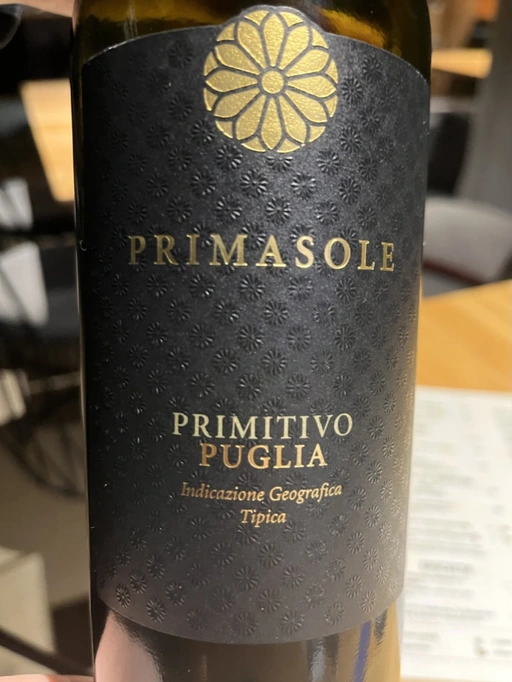

- Type
- Red Still, Semi dry
- Producer
- Cielo e Terra
- Vintage
- NV
- Location
- Italy, IGP Puglia
- Grapes
- Primitivo
- Alcohol
- 13.5
- Sugar
- NA
- Price
- 295 UAH
- Cellar
- N/A
Ratings
2022-11-13 - 7.25
What do you expect from non-vintage off-dry Primitivo from Puglia? My expectations were low, so in my opinion, Primasole over-delivered. Yes, it’s linear and simple but honest, juicy and well-made. A burst of dark berries and red fruits with a smokey touch. It has good fruit, structure, tannin and acidity. Great table wine.